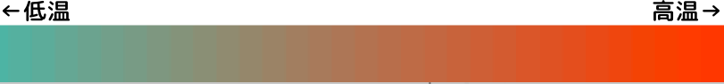
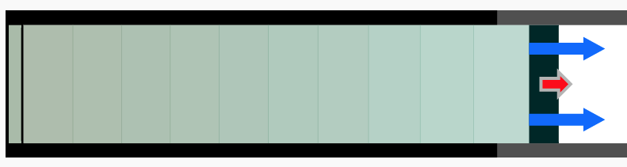
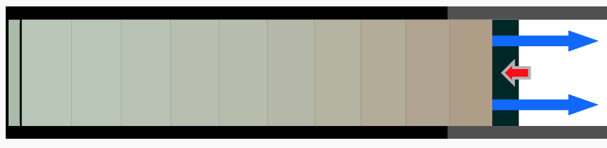
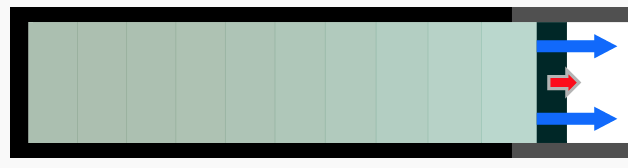
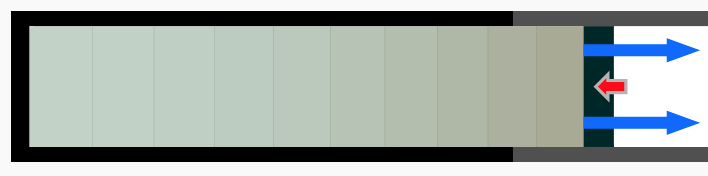

というわけで現実には存在しない準静的操作であるが、では現実とはどのように違うのだろうか。そこで、（まだ現実ではないんだけど）「準静的操作よりは現実に近い状況のシミュレーション」を見せよう。
下の図で、ピストンを押したり引いたりしてみよう。画像の色は温度を表す（赤が高温、水色が低温である）。

色の透明度が圧力を表しているので、濃い色のところほど圧力が高いと思ってよい（真っ白な部分は真空に近い）。ピストに働いている力（圧力）は矢印で表現している。
押したり引いたりすることで、気体は圧縮され温度が上がったり膨張して温度が下がったりしつつ、圧力や体積が変化していく。ピストンの移動は矢印で表現している。
このシリンダーは、左端だけは断熱されておらず、左端に接した部分の気体は温度が一定である壁に接している（↓の図では、左端が黒ではないことで「左端からは熱が出入りする」ことを表現している）。
左端の部分は温度一定の壁に接しているので等温に保たれる。そして、時間が経過すれば全体が等温に達する（平衡状態）。左端からだけ熱が出入りするようにしたのは、プログラムの都合（1次元的な現象にしたかった）であって物理的意味はありません。
さて、ピストンを引いてみると、引かれた部分は気体を膨張させたことになるので、圧力が下がり温度も下がる。

↑この絵は単なる画像です。動きません。
この時、「等温操作」という名前ではあるが操作のあいだじゅうずっと等温というわけにはいかない。↑の図のように、ピストンに近い部分は温度が下がり、シリンダーの気体内に温度勾配ができる。

↑この絵は単なる画像です。動きません。
逆にピストンを押す時も同様で、↑の図のように、ピストンに近い部分は温度が上がった温度勾配ができる。
ピストンを引いてから押して元の体積にまで戻したとする（上のプログラムで自分でやってみるべし）。温度もしばらく待っていれば外気温と同じ、つまり元の温度に戻る。
力学でエネルギー保存則を考えるときは「一周回って戻ってきたのだから、エネルギーも元の状態に戻っている。だから仕事は0」というふうに考える。しかし、この場合の仕事は明らかに0ではない。
プログラムを動かしながら、ピストンを引く時と戻す時で気体の圧力（青矢印）がどうなっているかを見ると、引く時は比較的圧力が小さく、戻す時は圧力が高くなっていることがわかる。結果として、ピストンが引かれる時に気体のする仕事の量は、戻す時に気体にされる仕事の量より大きいことになる。つまり、外部から仕事をしてやらなくてはいけない（気体は負の仕事をする、と言ってもよい）。
次の例として、周囲と熱のやりとりのない（断熱的）閉じ込められた気体を考えよう。
まずピストンを引いてみよう。よく見るとわかるように、温度や圧力は全体が一斉に変化するのではなく、ピストンに近い部分でまず「気体が膨張する」「気体の温度が下がる」という変化が起こる。

↑この絵は単なる画像です。動きません。
そして、その変化が二つの理由で伝わる。二つの理由とは、
である。
ある程度引いた後、しばらく待って気体の状態が一様になったな、と思ったら今度は押して戻してみよう。今度はピストン付近の気体が圧縮されて温度が上がり、さっきとは逆に現象が伝わっていく。

↑この絵は単なる画像です。動きません。
ピストンを引いてしばらくしてから今度は押して、元の体積に戻した時、温度は少々上昇しているはずである。
押したり引いたりする速度を変えて動かしてみよう。遅い速度の方が、全体の温度が一様に近い、ということが納得できるだろうか。
この時気体のする仕事がどうなっているかを手がかりに考えてみよう。
断熱操作と等温操作を比べると、熱の形でエネルギーが補充されて温度が一定になっているため、こちらの方が「できる仕事」は多いように思われる。詳細な計算は後でやるので、とりあえず今は「断熱操作と等温操作とでは、違うタイプのエネルギーが定義できるみたいだ」と感じておこう。
最後に、同じピストンの運動を、P（圧力）-V（体積）のグラフを見ながら行ってみよう。
下の図の青い線は、気体全体が常に等温を保った場合のP-Vの線である。等温操作でも断熱操作でも、実際の変化はこのようには起きない。
このように現実的な気体では（といっても、ここで見せているシミュレーションはまだまだ実在気体に比べれば簡単化されたモデルにすぎないのだが）、状態方程式から予想されるような変化は起きない。状態が「平衡状態」でない変化をするからである。変化が十分ゆっくりなら、「平衡状態」を保ったままで状態変化を行うことができる。そのような変化を「準静的操作」と呼ぶ。